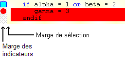

Marges de l'éditeur de textes

La marge est divisée en deux parties :
Marge des indicateurs
La partie gauche (curseur souris en forme de flèche pointant au NO) affiche les indicateurs (marques, points d'arrêt, erreur courante, etc.) et permet, en y cliquant, de poser un point d'arrêt sur la ligne correspondante (source Diva).
La couleur de fond de cette zone est paramétrable (options Environnement : Police et couleurs, intitulé "Marge des indicateurs").
Marge de sélection
La partie droite (curseur souris en forme de flèche pointant au NE) permet la sélection de lignes complètes.